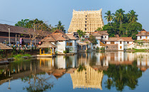
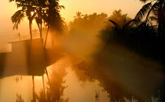

Sree Padmanabhaswamy Temple

Napier Museum

Vellayani Lake
Shangumugham
Thiruvananthapuram District is the southernmost district in the Indian state of Kerala. The district was created in 1949, with its headquarters in the city of Thiruvananthapuram, which is also Kerala's capital. The present district was created in 1956 by separating the four southernmost Taluks of the erstwhile district to form Kanyakumari district. The district is home to more than 9% of total population of the state.[2] The district covers an area of 2,192 square kilometres (541,655 acres). At the 2011 census, it had a population of 3,301,427,[3] making it the second most populous district in Kerala after Malappuram district. [4] Its population density is the highest in Kerala, with 1,509 inhabitants per square kilometre (3,910/sq mi).[5] The district is divided into six subdistricts: Thiruvananthapuram, Chirayinkeezhu, Neyyattinkara, Nedumangadu, Varkala, and Kattakada. The urban bodies in the district are the Thiruvananthapuram Corporation, and the Varkala, Neyyattinkara, Attingal, and Nedumangad municipalities.[6] Thiruvananthapuram district is located between 8.17°N 76.41°E and 8.54°N 77.17°E. At the southernmost extremity of the district, Kaliyikkavila is 54 kilometres (34 mi) from Kanyakumari, the southernmost point on the Indian peninsula.[7] 33.75% of the population lives in urban areas.[8] The district has three major rivers, several freshwater lakes, and over 300 ponds. Its eastern region is forested, northern regions are mostly under rubber cultivation and the remaining areas grow mixed dry-land crops of coconut, plantain, and tapioca, among others. Built-up areas and rice fields complete the land use pattern.
Sree Padmanabhaswamy Temple
Napier Museum
Vellayani Lake
Shangumugham